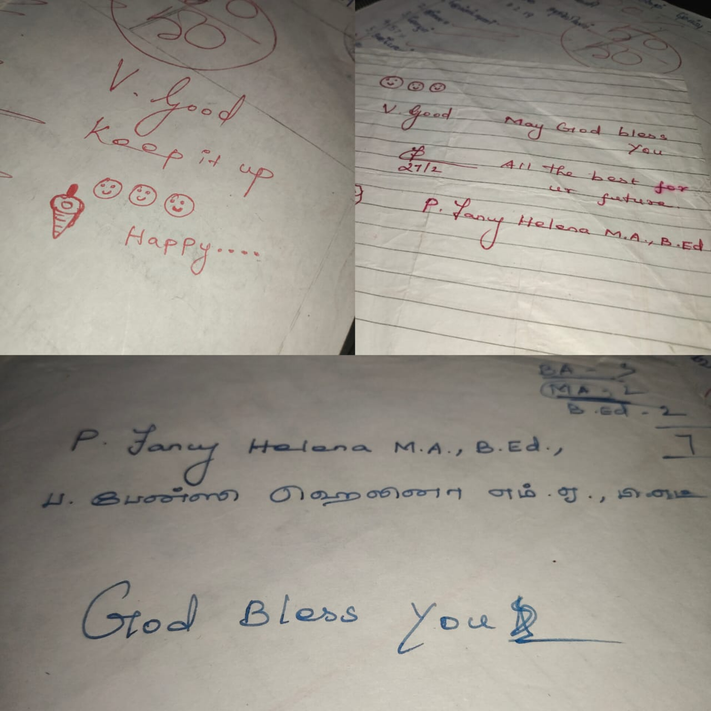
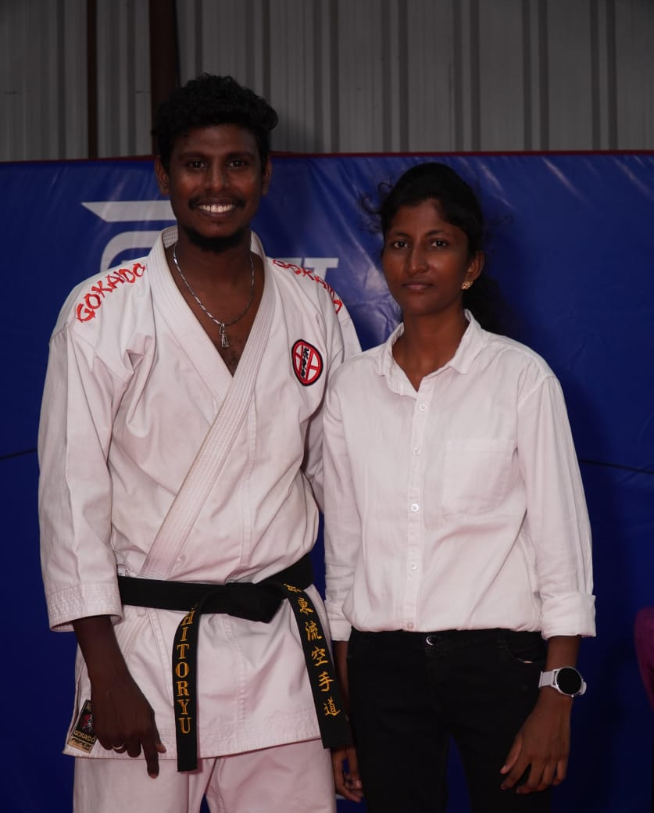

My Mentors and Inspirations

🌸 Mrs. Fancy Helena – My Favorite Teacher 🌈✨
Some people leave a special place in our hearts without any particular reason… and for me, that person is Mrs. Fancy Helena 🌸💫
She was my English and Social Science teacher 📘📖 during both 9th and 10th standard 🏫, and I still miss her deeply every single day 💭💞
I never really knew why I liked her so much... but her presence gave me a sense of comfort and joy 🌷💗 Every interval and lunch break 🍱⏰, I would eagerly go just to see her — as if it had become a beautiful habit 🥰🌼
She wasn’t just a teacher… she felt like a best friend, a guide, and someone I could look up to with admiration 💕👑
Even now, I still have the autograph she wrote for me 📝✨ It’s safely stored like a treasure 💌, and I often look at it and smile with gratitude 🫶🌟
When school was about to end, I thought, “Maybe everything will fade in time…” 😔🍂 But even today, the feeling I get when I think about her is still fresh and alive 🕊️🌸 — just like the bond we shared.

🥋 Master RK – My Karate Master 💪🏼
Master RK is not just a teacher — he is my mentor, motivator, and guiding force in my martial arts journey. 💥
He taught me both Karate and Gymnastics, shaping me into the strong, confident person I am today. 💫
What makes this bond extra special is — he is my own cousin (mama paiyen) ❤️ From the very beginning, he recognized my potential and stood by me with endless support and encouragement. 🌟
Thanks to his tireless efforts and strict training, I proudly earned my brown belt in Karate 🟤 and became a Gymnastics Coach who now trains others with the same passion! 🧘♀️✨
I am always grateful for his guidance, discipline, and the values he has instilled in me. 🙏 He will always remain one of the biggest inspirations in my life. 💯🥇
🌸 Mrs. Ananthakumari – My Guiding Light in College Life 🌟🙏
When I was struggling with family problems and felt like giving up on my education, Mrs. Ananthakumari came as a true blessing in my life. 🌈✨
She didn’t just teach me inside the college walls; she went beyond her duties and personally visited my home to encourage me. 🏠💖 That act of kindness and care gave me the strength to keep going. 💪📚
There was a time when I thought I might have to leave college because of difficulties, but because of her unwavering support and belief in me, I stayed and fought harder. 🥊🔥
Without her, I wouldn’t be here today — pursuing my Engineering degree and chasing my dreams. 🎓🚀
She is not just a professor to me; she is my mentor, my protector, my second mother, and my biggest source of inspiration. ❤️👩🏫
Whenever life feels tough, I remember her words and the hope she gave me. Her presence in my life has been nothing short of a miracle. 🙏🌟